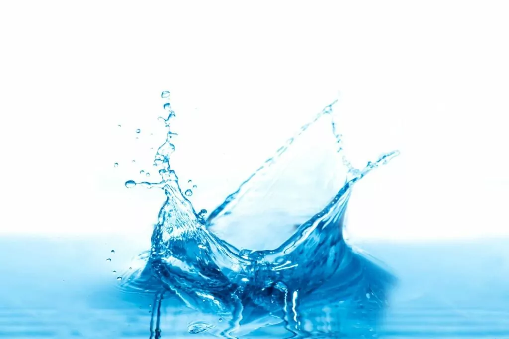

O que é a água?
Água é algo essencial para que a vida exista na Terra, a água é um recurso natural abundante em nosso planeta. A água não é apenas parte da composição do planeta, mas também faz parte de nosso corpo, sendo cerca de 70% do nosso corpo feito de água. A água é usada em muitas atividades importantes, como a agricultura, industrias, hidrelétricas.